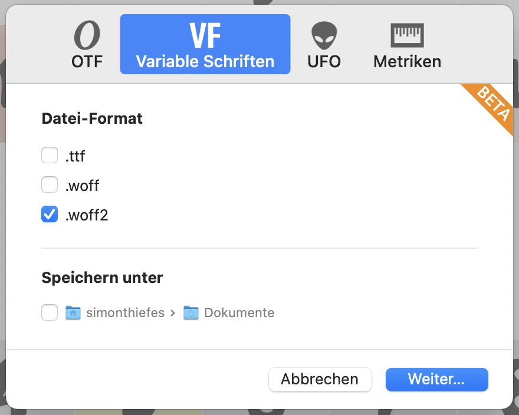

But first things first. Let’s export our font preferably as woff2 (for two reasons: neatly small files and good brwoser support). So export the font in Glpyhs like so:

Export settings in Glyphs. Export as VF in woff2 format.
For easier file handling you can setup your own GitHub pages page (tutorial here) and upload your font to the repository, to get a link to it, so that we can use it in our first drafts. The links will look like https://yourusername.github.io/YourFontFile.woff2It is also a good idea to sign up at Codepen to scribble some code.